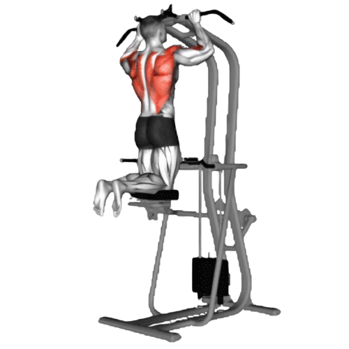
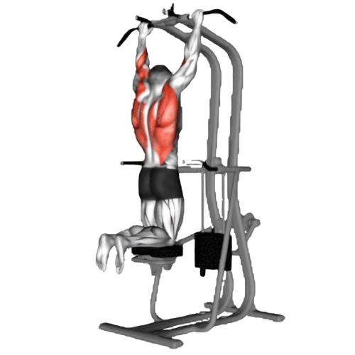

어시스트 풀업

- 어시스트 머신에서 무릎 패드의 보조 중량을 선택한다. 무거운 중량을 설정할수록 더 많은 보조를 받아 쉽게 풀업을 할 수 있다.
- 바를 두 손으로 어깨 너비보다 약간 넓게 잡고, 무릎을 패드 위에 올린다.
- 등 근육을 사용하여 몸을 천천히 위로 당기면서 턱이 바와 같은 높이까지 올라오도록 한다. 이때 팔꿈치는 바깥쪽으로 벌어지지 않도록 유지한다.
- 이때 호흡은 뱉는다.
- 천천히 몸을 아래로 내려 원래 위치로 돌아간다. 이때 팔을 완전히 펴지 않도록 한다.
- 이때 호흡은 마신다.

주의사항
- 팔꿈치가 바깥으로 벌어지거나 허리가 과도하게 구부러지지 않도록 신경 써야 한다. 운동 중 어깨를 내리고 등을 활용하여 당기는 것이 중요하다.
- 지나치게 무거운 중량은 잘못된 자세를 유발할 수 있어 부상의 원인이 된다.
운동부위 및 효과
- 광배근, 승모근, 능현근, 대원근, 이두근, 전완근, 코어근육
- 등 근육이 발달하면서 구부정한 자세를 교정하는 데 도움이 된다. 어깨가 뒤로 당겨지고 등이 곧게 펴져 바른 자세를 유지할 수 있게 해준다.